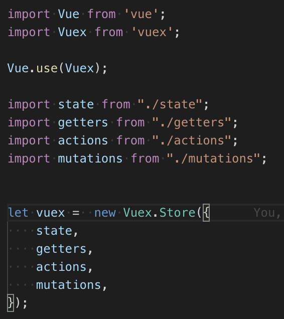

# [Vue] 導入 Vuex 管理 Vue 專案的狀態
# 對於大型 Vue 專案來說，Vuex 將 Vue 元件中的狀態抽出以有效地每個元件的交互影響
還記得我們前些時間提過的有關 Vue 組件之間的溝通方式 嗎？當時提過，Vue 在父子組件之間傳值可以使用 props 跟 emit ，前者是父傳子、後者是子傳父。這在小型的專案中，已經能夠很好的維持資料流的傳遞了。
然而， 當專案越來越大 、 組件越來越多 ，我們要如何掌控每個組件之間互相傳遞的數值內容？若是某個變數並非只是在某個父組件之內使用，它還需要在 更全局 地被使用，是否這個變數更加難以被掌控？
我們以一張 有無 Redux 的差異 來講述 有無 Vuex 的差異 。因為在我看來，Vuex 被設計出來的目的跟 Redux 要解決的問題是一樣的。
https://github.com/userfrosting/UserFrosting/issues/836
沒有 Redux (Vuex) 時，組件之間變數互相傳遞，程式難以追蹤變數變化；使用了 Redux (Vuex) 之後，我們將組件之內的變數抽離，控制全局的變數使用 Redux (Vuex) 的 Store 統一控管，當 Redux (Vuex) 中 Store 的變數內容變更時，統一通知所有使用到此變數的組件，並重新 Render 整個畫面。以此達到狀態的統一。
# Vuex 的使用方法
Vuex 官方文檔在介紹中附上了這張圖

https://vuex.vuejs.org/
這張圖很清楚的表達了我們該怎麼使用 Vuex。
我們將在 Vue Components 中的變數抽離出來，存在 Vuex 的 State 中。
當程式需要更新 State 時，我們使用 Vuex 的 actions 去呼叫 Mutations 使 Mutations 更新 State 的內容，並且最終在 Render 回 Vue Components。
如此不僅達到了一個單一方向的資料流，而我們也能透過監控 Vuex 更好地去追蹤每個變數中的數值變化。
以下我們以實現 TodoList 舉一個簡易的 Vuex 使用例子。
1. 首先創建一個專門管理 Vuex 的資料夾並且在其中新增好對應 state、mutations、actions、、getters 的 Js 文檔
2. 之後我們將這些文檔掛載入 Vuex 之內。

3. 最後一步，在 Vue 專案的入口處 main.js 載入剛剛建立的 Vuex 實體物件。
如此便可以開始在 Vue 中使用 Vuex 了。
# API Request 取得 Todos 列表
我們先假設已經有一些待辦清單存在遠端的 Server ，因此我們需要使用 Request Api 的方式獲得這些清單，並且顯示在畫面中 (在這邊我使用一個很好用的 Fake API 網站 )。
還記得上方的 Vuex 流程圖嗎？
Request API 是在 Actions 的地方進行的，因此我們在 Actions.js 加入以下程式碼。
由於 actions.js 是掛載在 Vuex 之中，因此每個 function 的 第一個參數會被注入 Vuex 專屬的內容 ，在這邊，我們會使用到 commit 這個方法。
我們利用 commit 方法將從遠端拿到的待辦清單 commit 到 mutations 。
接著我們在 mutations 中新增以下程式碼，將從 actions 得到的資料內容更新至 Vuex 的 state 中。
程式碼是很單純的將值傳入。
而 state 只是很單純的宣告我們要儲存的變數內容。
最後，為了能夠在 Vue Components 中獲得 state 管理的變數，我們在 Getter.js 中為他增加 Getter 方法。
最終，我們要在 Vue Components 使用這個變數。
在這邊 Vuex 為我們做好了映射 Getter 與 Action 的方法： mapGetters 、 mapActions 可以讓我們很輕鬆的在 Vue Components 中注入 Vuex 的 Actions 與 Getter。
我們在 Components 中載入這兩個方法。
並且將 Getter 注入 Computed 中。
之後將 Action 注入 methods 中。
如此我們便能像使用 Vue 原本的 Method 跟 變數一般地使用這些 Actions, 與 getter。
由於我們希望，在畫面一出來時便獲取這些資料，因此我們在 mounted 時便要求 Vuex 去 Request 這些內容。
我們 console.log() 看看是否真的正確獲得資料了。
目前看起來非常正常。
接下來就寫一個簡單的畫面顯示。簡易的 Html 如下：
在這邊，我沒有打算再用 CSS 美觀畫面，因此最終我們會得到的結果會是長這樣的。
至此。我們完成了最基礎的在 Vue 中導入 Vuex 的功能。
然而隨著專案越來越大，把所有的 states , actions , mutations 都寫在同一份 js 中是非常混亂且不明智的。
因此 Vuex 也提供了 modules 的概念，幫助我們將 store 分割成較小的 modules 以方便管理。
關於這塊，我們未來會在另一篇詳細介紹。
# 結論
我們今天簡單的展示了在 Vue 專案中，導入 Vuex 架構的方法。
利用 Vuex 可以將 Vue 中管理各個組件之間狀態的變數分離出來，使專案更易維護。但是伴隨著的也是我們需要花更多時間去撰寫整條資料流。
因此，在什麼情況下我們該使用 Vuex ？
在 Vuex 文檔中有這麼一段話：
就像眼镜：您自会知道什么时候需要它。